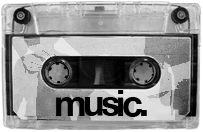

>>> Welcome to The Cave <<<
WARNING: You have stumbled into my digital brain. No algorithms, no corporate streaming. Just pure, uncompressed audio and raw pixels.
+++ OFFICIAL LINKS +++
+++ CYBER PORTALS +++
+++ MOTD +++
LOGGED: LOADING...
+++ AUDIO TRANSMISSIONS +++
SOUND-BOY 2000

TAPE STOPPED
[Insert spinning flaming skull gif here] [Insert "Best viewed in 800x600" button here]